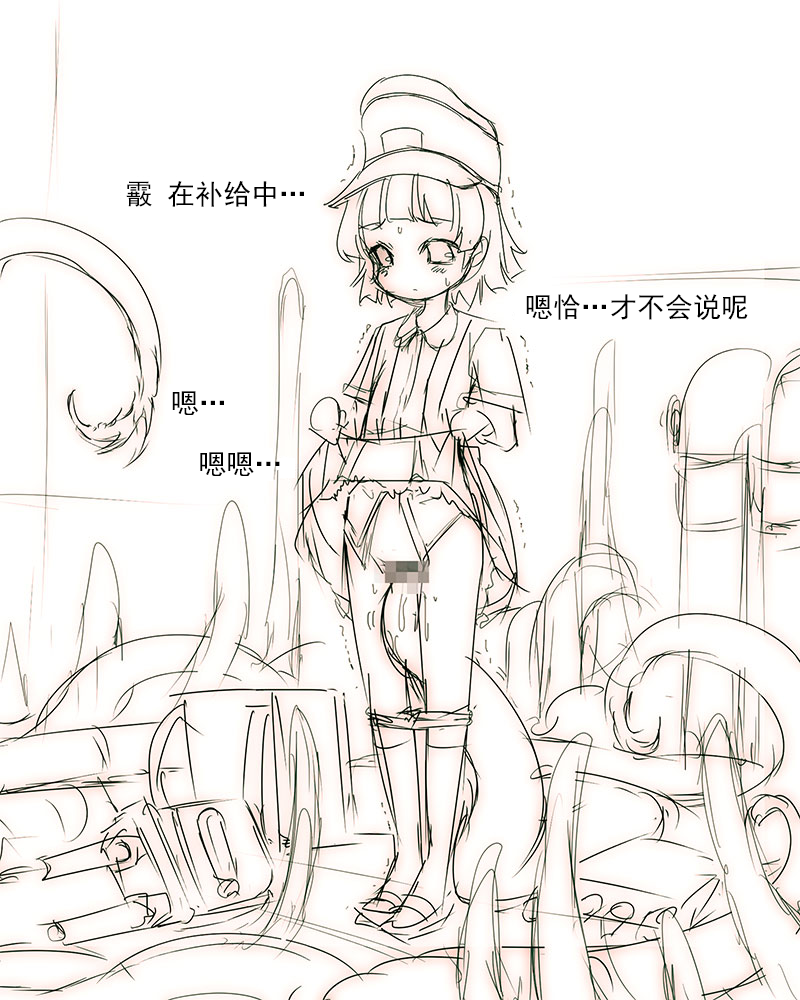

————————————————————————————————————————
■附录…或者说是后记

嗯恰！（喂
初次见面的朋友，初次见面
常来看的朋友，非常感谢你们。
我是人丸。
人生第一次制作二次创作作品
怎么说…超级开心呢。
如果能让电做旗舰成功攻略基斯岛，就给她多画一页吧！
↓
なのです！（神盾驱逐舰电）
如果画一页大凤，就能大建成功哈哈这种都市传说怎么可能…
↓
06:40:00
…
嘎（吐血）
传说是真的…
大凤好可爱！太可爱了！把屁屁露出来！呀哈！
啊ゝ活着真是太美妙了…（闪闪发光☆）（升天）
文中加了一张特别的克苏鲁图片，这是
■AHC阁下主办 夏季CM88作品
原创TRPG规则书「与克苏鲁神话的邂逅」
～的封面。
获得了许可后登载于本作品中。
非常感谢！
■本次也在BMP文件夹中放入了大尺寸的图片■
…那么下部作品见
拙作能陪伴您真的十分感谢。
【特别致谢】
なるー♀ 阁下
あきたけ 阁下

Hitomaru＠works 2015
※该logo指向「SHRINE」的网站。
————————————————————————————————————————
|